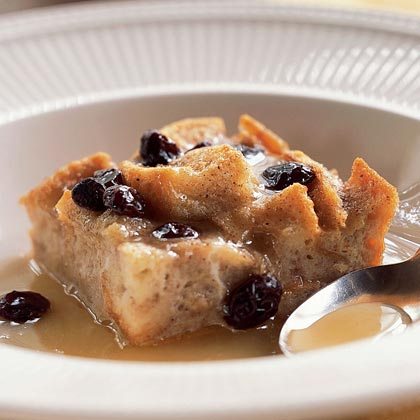

Bread Pudding
Ideal recipe to use bread leftovers and turn them into a tasty dessert. It can be enjoyed warm or chilled.
 Easy |
 5 servings |
 75 minutes |
|---|
Ingredients:
Bread, leftover or fresh
3 tdsp of granulated sugar
2 cups of milk
2 eggs
1/2 cup of brown sugar
1/4 cup of condensed milk
1/2 tbsp of vanilla extract
1/2 tbsp of cinnamon
Raisin or nuts (optional)